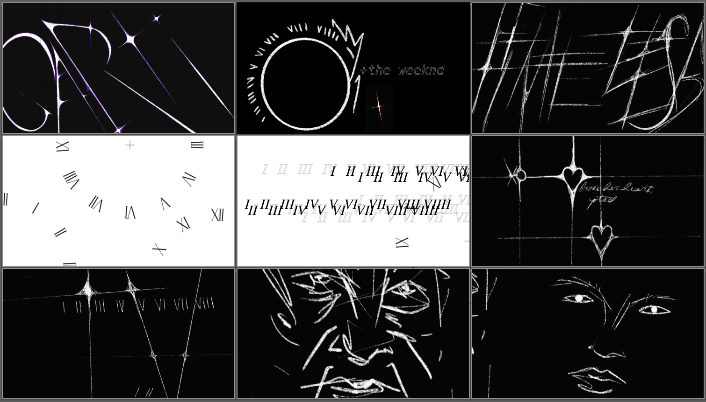

timeless


summary
a hand-drawn stage-background animation set to "timeless" by the weeknd & playboi carti. a school final project.
overview
a school final project: a stage-background animation imagined for a live performance of "timeless" by the weeknd and playboi carti. every element was drawn by hand, from the jagged, splintered lettering to the glowing orb and the spears that cut across the frame, then assembled and animated in after effects.
concept
the song is about lasting forever, so the visuals are built from symbols of immortality: polaris, the star granted to dhruva in hindu myth for his steadfast devotion; the ouroboros, a snake eating its own tail; and sirius, tied to osiris and renewal in ancient egypt. clocks and roman numerals run through everything, counting toward "timeless."

storyboard
the storyboard moves from scratched, star-tipped lettering into falling roman numerals, a heart-and-star sequence ("broke her heart, yeah") and finally loose, hand-drawn faces, so each section of the song gets its own visual world.
staging
the animation was planned for a stage wrapped in screens: a back wall, two angled side panels and a curved floor screen, with a grandfather clock at center and hanging clocks on either side, so the time motif carries off the screens and into the room.

zine
the project was documented in a printed zine covering the concept, storyboard and production, with creative direction and design credited to "del."
files
approach
the visuals are made to live behind a performer: mostly black, so the stage lighting and the artist stay in front, with sharp, hand-scratched forms that flash, drift and break apart in time with the track.